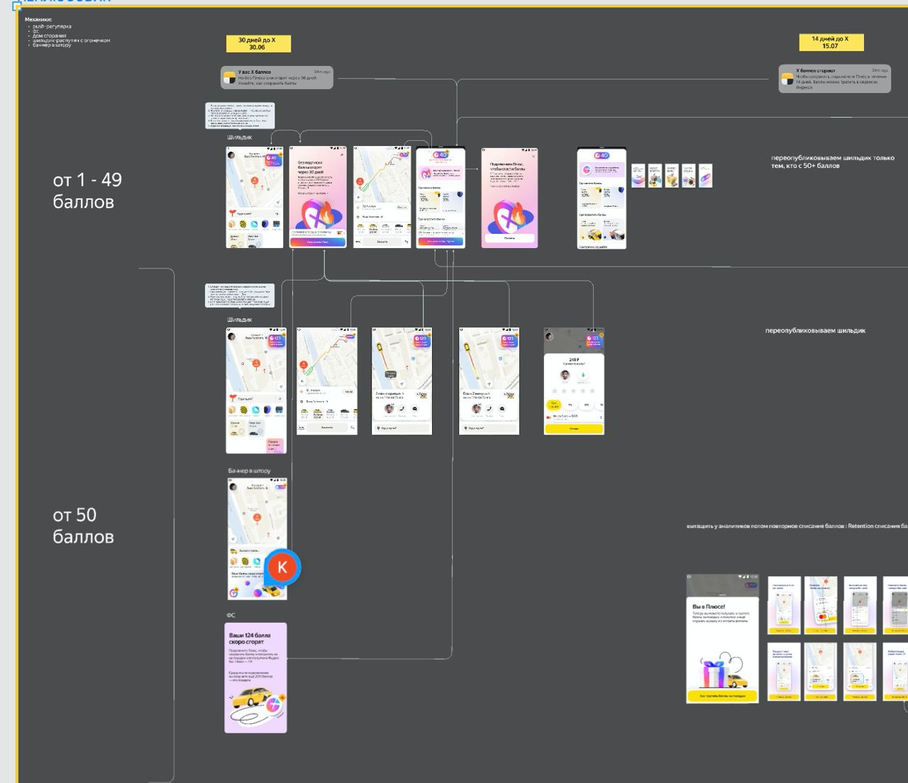
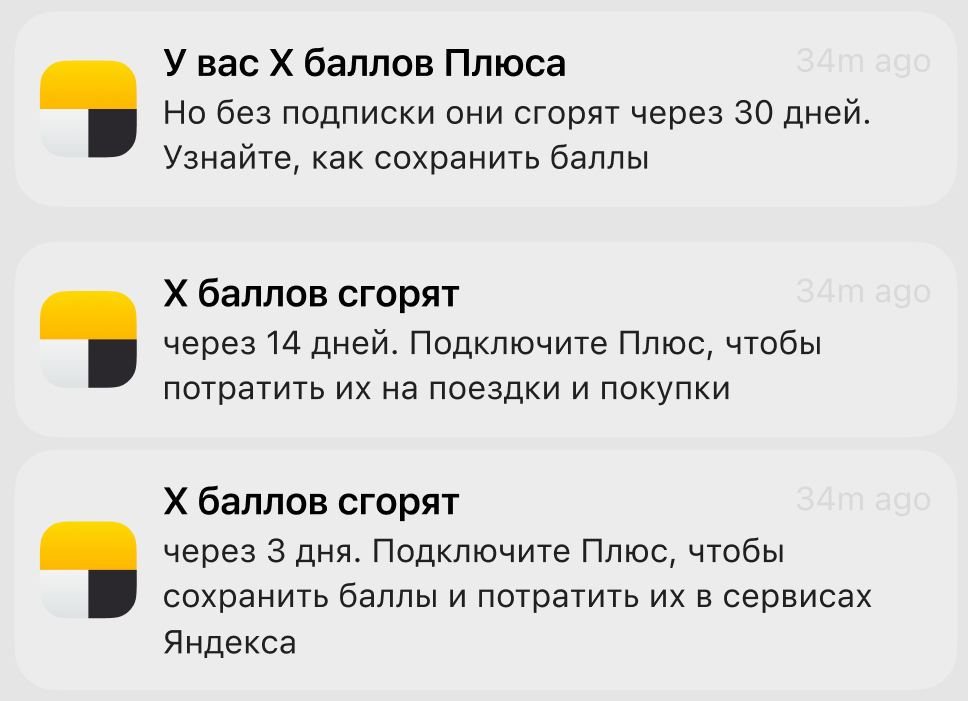

Сценарий один: лайтовые согласования
Поговорим про юристов. Согласование текстов с юридическим отделом — не самый приятный процесс, но с этим сталкивается каждый серьёзный специалист. К этому нужно быть готовым. Кстати, я сама с высшим юридическим образованием — такой вот фан-факт.
В идеальной картинке согласование текстов выглядит так: вы написали, отправили на проверку юристам, они прочитали, одобрили, вы пошли дальше. В реальности всё чуть сложнее, но бывает и по-человечески — когда процесс построен грамотно, а люди не пытаются переписать каждый ваш текст заново.
В таких случаях юристам отправляют уже финальные макеты на утверждение, а все предварительные согласования проходят внутри продуктовой команды. Продакты и дизайнеры обычно в курсе специфики продукта и знают, где у компании болевые точки с точки зрения регулирования, поэтому вы заранее получаете установки: вот здесь нужно быть аккуратнее с формулировками, здесь обязательна сноска, тут нельзя писать «гарантируем». То есть вы входите в задачу уже с пониманием границ, и это сильно упрощает работу, потому что вы не пишете текст вслепую, а сразу закладываете юридические требования в формулировки.
И когда текст доходит до юристов, они чаще всего присылают базовое одобрение или просят поправить пару фраз. Это микроправки, которые не ломают ни смысл, ни стиль, ни структуру — они просто добавляют компании юридической защиты. Например, в контексте кэшбэка юрист скажет: напиши «до 5%» вместо «5%». Потому что если вы напишете просто «5% кэшбэка», а у какого-то пользователя выйдет 4,8% из-за округления или особенностей категории, он может пойти в ФАС с жалобой, и компания получит штраф. А «до 5%» — это уже безопасно, потому что обещана не конкретная цифра, а максимальное значение, и пользователь заранее знает, что может получить меньше.
Такие правки можно и нужно делать превентивно ещё до отправки юристам. Если вы знаете, что в вашей сфере есть типовые места, где регуляторы давят на компании, вы просто закладываете эти формулировки сразу. В банковской сфере это «до X%», «от Y рублей», «ставка может меняться», «условия уточняйте». В доставке — «время доставки может варьироваться», «ориентировочное время». В страховке — «страховой случай наступает при выполнении условий». И если вы сами это пишете, вы экономите время всей команде, потому что юристы не возвращают макет на доработку.
Но есть и обратная сторона. Иногда лайтовые согласования становятся ловушкой. Когда процесс выглядит простым и быстрым, продакты начинают думать, что согласование текста можно вписать в любой дедлайн за час. И это правда — когда всё уже настроено, когда вы знаете границы и юристы не придираются, согласование проходит быстро. Но это не значит, что вы всегда должны успевать за час. Потому что юристы могут вернуть не пару фраз, а целый список, и если вы не заложили время на итерации, вы опять оказываетесь в цейтноте.
Если вы знаете, что в вашей компании юристы обычно просят поправить пару формулировок, и эти правки предсказуемы, вы можете спокойно планировать время. Если же юристы известны своим перфекционизмом и возвращают макеты с тридцатью комментариями, вы просите продакта закладывать время на согласование отдельно, и в своём планировании это учитываете. И если продакт говорит «у нас сегодня релиз, согласовали?», а вы только что отправили макет юристам, вы отвечаете: «Отправила, жду ответа. Если они ответят через час — успеем, если через день — релиз сдвигается. Я не могу влиять на скорость их работы». И это честное управление ожиданиями.
Ещё один момент — что делать с правками, которые юристы предлагают, но которые ломают текст. Это случается реже при лайтовых согласованиях, но бывает. Например, юрист просит написать «Потребительский кредит предоставляется на условиях, установленных договором» вместо вашего человеческого «Оформите кредит за минуту». И вы понимаете, что если вставить эту формулировку, текст перестанет работать — пользователь его просто не прочитает. Здесь ваша задача — предложить компромисс. Не спорить, а переформулировать юридически корректный вариант так, чтобы он остался человеческим. Вместо официальной конструкции вы пишете: «Условия кредита — в договоре. А оформить можно за минуту». Юридически чисто, пользователь не споткнулся, и все довольны.
И последнее про лайтовые согласования, о чём часто забывают. Когда процесс становится слишком мягким и быстрым, команда перестаёт воспринимать юристов как важных стейкхолдеров. Начинается: «это ж просто формальность, мы потом досогласуем». А потом досогласовать забывают, и на прод уезжает текст, который юристы не видели. И даже если этот текст был хорошим с редакторской точки зрения, риск, который компания на себя берёт, всё равно остаётся. Поэтому редактор должен быть тем, кто знает, где можно упростить, а где нельзя. И если вы видите, что какой-то макет уезжает без согласования, вы должны сказать: «Ребята, это надо показать юристам, я эту формулировку не могу гарантировать». Это тоже часть вашей ответственности — не только писать, но и защищать процесс от хаоса.
В итоге лайтовые согласования — это хорошо, когда они работают. Но они работают только тогда, когда есть прозрачный процесс, когда редактор знает границы заранее, когда юристы предсказуемы и когда никто не пытается проскочить без проверки. И ваша задача как редактора — поддерживать этот баланс: не усложнять процесс там, где он и так работает, и не позволять упрощать его там, где это рискованно.
Сценарий два: Жесткие согласования и защита текста
Бывают проекты, где риски реально высокие, и юристы не ограничиваются микроправками вроде «до 5%». Они цепляются за каждое слово и требуют писать именно так, как они сказали, без вариантов. И вот тут начинается самое интересное для редактора, потому что ваши инструменты — человеческий язык и пользовательский опыт — вступают в прямой конфликт с юридической безопасностью.
Самый частый сценарий: вас просят не вводить новый термин, потому что его нет в официальной документации. Например, вы придумали для пользователей понятное слово «автоплатёж», а в договоре, который подписывает клиент, фигурирует только «поручение на списание денежных средств по инициативе банка». И юристы говорят: «Вы не можете использовать слово "автоплатёж" в интерфейсе, потому что в договоре его нет. Если пользователь прочитает в приложении "автоплатёж", а потом откроет договор и не найдёт там этого термина, он может оспорить транзакцию». И это реальный риск, который может вылиться в судебные иски. Поэтому они блокируют любые новые понятия. И вы сидите и думаете: как объяснить пользователю сложный процесс, не используя ни одного человеческого слова, только те, что есть в договоре? Это как пересказывать «Войну и мир» одними междометиями.
Конкретные примеры из-под NDA я не могу привести, но суть одна: редактор оказывается между молотом и наковальней. С одной стороны — пользователь, который не понимает бюрократического языка. С другой — юрист, который не пропустит ни одного «незаконного» слова.
Первое, что вы делаете, — идёте к юристу и спокойно спрашиваете: «Какие именно риски вы видите? Что может пойти не так, если мы используем это слово?». Часто юристы перестраховываются — это их работа, они должны учитывать все сценарии, даже самые маловероятные. И когда вы задаёте конкретный вопрос, они начинают объяснять, и иногда в этом объяснении вы слышите, что риск есть, но он ничтожно мал, или что он возникает только в определённом сценарии, который пользователь почти не встретит. И тогда вы можете предложить компромисс: «Хорошо, мы не будем использовать слово "автоплатёж". Но можем написать "настройте регулярное списание" — это описание процесса, а не термин, и в договоре оно не противоречит вашей формулировке». Юристы обычно соглашаются на такие варианты, потому что вы не вводите новый термин, а просто описываете действие. Класс, если на вашей стороне продакты, которые готовы принять риски.
Дальше второй уровень — когда юристы требуют писать бюрократическим языком, канцеляритом, который прямо запрещён вашей редполитикой. Вот тут у вас есть козырь — Tone of Voice. Это внутренний документ, который закреплён на уровне дизайн-команды или всей компании, и в нём чётко прописано, как должен звучать продукт. Если ваша редполитика говорит «пишите просто, понятно, без канцелярита», а юрист требует «осуществить возврат денежных средств в соответствии с условиями договора», вы можете ответить: «Мы не можем использовать эту формулировку, потому что она противоречит нашему Tone of Voice. Давайте я найду вариант, который будет юридически чистым, но при этом сохранит голос бренда». Это работает, потому что юристы понимают: редполитика — это официальный документ, и его тоже нужно соблюдать.
Третий сценарий — когда юристы требуют разместить все юридические условия акции прямо на экране. Не в сноске, а прямо там, где пользователь должен принять решение. И получается экран, на котором 80% текста — это «участник акции подтверждает своё согласие на обработку персональных данных в целях...» и так далее три абзаца. Пользователь это не читает, кнопку не видит, конверсия падает.
Здесь ваша задача — предложить компромисс, который сохранит юридическую чистоту, но не убьёт интерфейс. Первый вариант: написать на экране минимум — буквально одну фразу, например «Участвуя в акции, вы соглашаетесь с условиями», а подробные правила спрятать под ссылку «Подробнее» или «Условия акции», которая ведёт на отдельную страницу с полной «юридической портянкой». Это честно — пользователь предупреждён, а выбор читать или не читать остаётся за ним. Если юристы настаивают, что текст должен быть именно на экране, а не под ссылкой, вы предлагаете второй вариант: унести его в дисклеймер — мелкий серый шрифт под кнопками, который не мешает основному действию, но формально присутствует. И третий вариант, если денег на разработку не жалко, — спроектировать отдельный экран, который подробно рассказывает об условиях акции человеческим языком, а в самом низу этого экрана прикреплена юридическая версия. Тогда пользователь сначала видит понятное объяснение, а если хочет — может углубиться.
И самый важный навык в этих переговорах — не переходить в конфликт. Юристы не враги, они просто делают свою работу, и их задача — защитить компанию от рисков. Ваша задача — защитить пользовательский опыт, не создавая этих рисков. И когда вы приходите к юристу не с ультиматумом, а с предложением, вы показываете, что вы на его стороне, а не против него. Вы говорите: «Я понимаю, почему вы просите это написать. Давайте вместе подумаем, как мы можем выполнить ваше требование, но при этом не сделать интерфейс страшным для пользователя». И в 80% случаев юристы идут навстречу, потому что они тоже хотят, чтобы продукт работал.
Но бывают ситуации, когда они не идут. Когда риск настолько высок, что никакой компромисс невозможен, и вы вынуждены писать канцеляритом. И здесь важно принять это как данность — как осознанное решение бизнеса, которое вы не можете изменить. Вы сделали всё, что могли: предложили варианты, привели аргументы, попытались договориться. Если решение принято на уровне юрдепартамента с санкции руководителя — вы это решение принимаете и пишете так, как сказали. Но вы фиксируете в задаче или в комментарии к макету, что вы были против, предлагали альтернативу, но решение было принято в пользу юридической безопасности. Это важно, чтобы в случае падения конверсии у вас была защита — вы предупреждали, вы предлагали, вы сделали всё, что могли.
Юристы мыслят рисками и договорами, вы — пользователями и опытом. И если вы сможете перевести их язык на свой, а свой — на их, вы станете тем самым редактором, который умеет продавливать качество, не сжигая мосты. А это, между прочим, очень ценный навык для роста, потому что именно на таких сложных проектах видно, кто просто пишет тексты, а кто умеет выстраивать процессы и договариваться.
Кросс-продуктовое взаимодействие: Реальные кейсы
Часто фича, которую делает ваша команда, напрямую затрагивает соседние продуктовые отделы.
Кейс Яндекса: Сгорание баллов Плюса
В Яндекс Маркете мы делали проект по списанию баллов Плюса у пользователей, которые давно не оплачивали подписку и больше года не пользовались накоплениями. Кэшбэк просто болтался на балансе. Списать баллы молча было нельзя, это вызвало бы сильный негатив. Нам нужно было подготовить масштабную коммуникацию: оповестить людей о списании и предложить им бонусную подписку на 30 дней, чтобы они успели потратить кэшбэк. Мы не просто забирали баллы, а предлагали их использовать.


Баллы Плюса — это кросс-сервисная история, кэшбэк начислялся в Маркете, Лавке, Еде и Такси. Нам приходилось общаться с командами Афиши, Путешествий, Музыки и Кинопоиска — со всеми сервисами Яндекса, где есть подписка. Я ходила на встречи по согласованию дизайна и защищала текст со своей стороны. Я писала тексты для всех этих сервисов, но у каждого из них была своя тональность, которую важно было соблюсти. На встречах я слушала комментарии коллег: какие-то отрабатывала, какие-то аргументированно игнорировала. В кросс-продуктовой работе нужно вовлекаться в процесс, чтобы показать смежным командам: вы делаете один общий продукт, важный для всей компании.
Банковский кейс: Редизайн сквозного раздела и синхронизация голосом
Сейчас в банке мы делаем сложный проект — редизайн одного раздела (пока NDA). Продакт-менеджер моей команды выступает заказчиком этого проекта. Мы вместе с ней и дизайнером ходим по командам, чьи продукты тоже находятся в этом разделе. Наша цель — причесать смыслы и дизайн по схожим продуктам, чтобы они выглядели одинаково, условия стали прозрачными, а пользователю было проще ориентироваться.
Поскольку мы инициаторы процесса, мы собираем условия со всех участников и согласуем их. Я пишу тексты для новых экранов. Но я хорошо владею информацией только в контексте своего продукта, а в соседних ориентируюсь хуже. Поэтому мне важно оставаться на связи с редакторами смежных направлений. Они делятся экспертизой, пишут экраны для своих блоков и помогают советами. Мы проводим много встреч с менеджерами соседних продуктов, чтобы синхронизировать смыслы. Проговаривать нюансы голосом в таких задачах критически важно: в комментариях Figma легко упустить сложные детали.